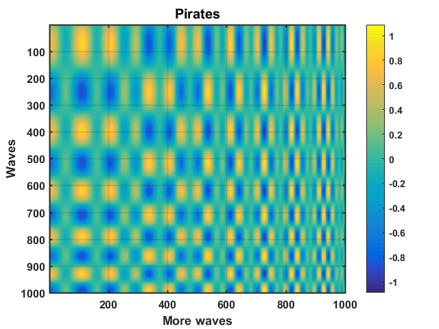
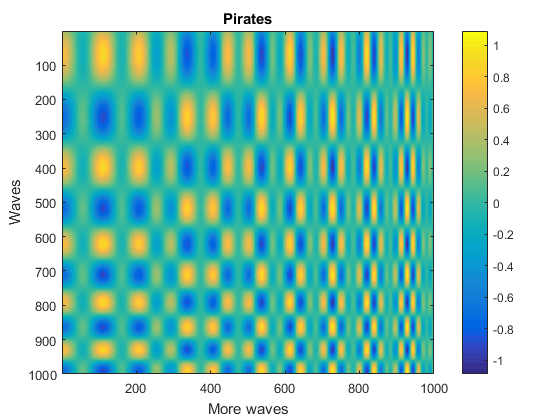
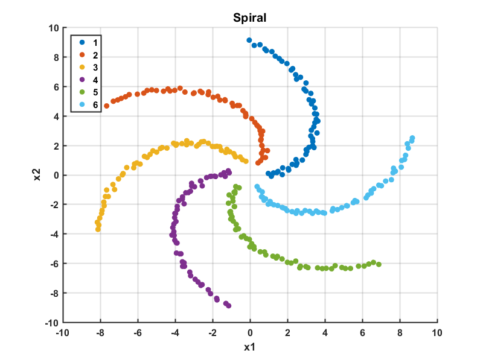

Contents
Example 1 - apply defaults
% Generate data x = 1:100; y1 = cumsum(randn(1,100)).*sin(1:100); y2 = cumsum(randn(1,100)); y3 = cumsum(randn(1,100)); close all % Plot figure figure plot(x, y1) hold on plot(x, y2) plot(x, y3) xlabel('Time') ylabel('Value') title('Figure') % Modify ng
Template not found, only applying defaults.
ans =
ng with properties:
h: [1×1 Figure]
template: 'Default'
s: [1×1 struct]
original: [1×1 Figure]

Example 2
Apply a template
noise = randn(1000,1000)/3; y = ones(1000,1000)+noise.*0.1; y2 = repmat(sin(linspace(1,32,1000)).*cos(logspace(1,2,1000)), 1000, 1); y3 = repmat(sin(logspace(1,1.6,1000))'.*tanh(linspace(1,96,1000))', 1, 1000); % Plot figure close all figure imagesc(y.*y2.*y3) colorbar title('Pirates') ylabel('Waves') xlabel('More waves') % Modify and apply template g = ng('Small'); % Save .png, .fig and .svg g.hgx('Figure') % SHow the original figure g.showOriginal
Figure hgexport of .png... saveas of .fig... 
Example 3 - Scatter
% Generate data nG = 6; nP = 56; radius = linspace(1, 9, nP)'; offset = ((pi*0:(nG))); thet = zeros(nP, nG); for t = 1:nG thet(:,t) = linspace(offset(t), (offset(t)+pi/2)', nP)'; end x1 = radius.*cos(thet) + randn(size(thet))/10; x2 = radius.*sin(thet) + randn(size(thet))/10; % Plot figure figure hold on for t = 1:nG scatter(x1(:,t), x2(:,t)) end xlabel('x1') ylabel('x2') title('Spiral') legend(num2str((1:nG)')) % Modify figure ng
Template not found, only applying defaults.
ans =
ng with properties:
h: [1×1 Figure]
template: 'Default'
s: [1×1 struct]
original: [1×1 Figure]
